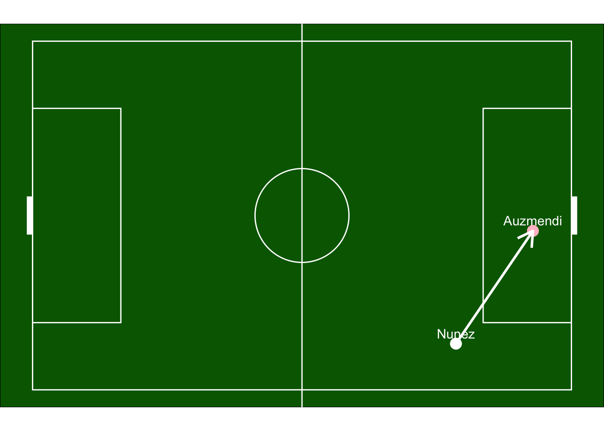
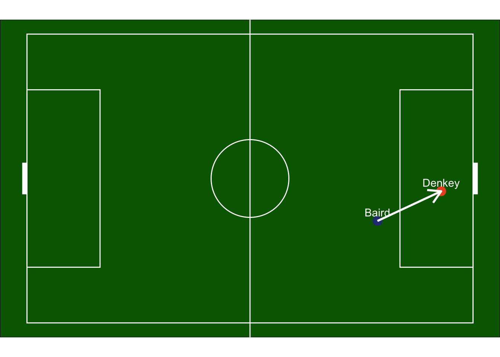

FCC 1 VS Motagua 1 Breakdown
Erm, is the Concacaf Champions League this niche?
A bit of a side note before diving in—I went to pull the stats for this game from FBref, and it seems there is zero report of the match against Motagua. Wild. Anyway, this gives me more time to develop a nice pipeline to prep for the Philadelphia game on Saturday after finishing this report. So, no crazy nice graphs in this one (sorry), but I’m sure we’d all rather keep this brief and move on to Tigres anyway!
Breakdown
The talk leading up to this game was first focused around the starting XI. We saw players like Louro get a start (who made a couple of really nice saves), as well as Adnan and Daley. We lined up in the classic Noonan sword 5-2-2-1, with Denkey up top. The game began as a bit of a cagey affair for the first few minutes, but Motagua broke it open in the 9th minute with a cross from the right, which was finished off by their target man, Auzmendi. The goal resulted from a lapse at the back by Adnan, who allowed Auzmendi to break free for an easy one-on-one finish inside the box. Adnan was one player who failed to impress me on the day. The goal is shown below:
However, FCC replied with a goal of their own through none other than Kevin Denkey in the 18th minute, when the ball was won back in the midfield by Anuga and eventually ended up at the feet of Denkey by way of a great run by Corey Baird.

Other than that, the game featured a few half-chances, with Louro making some excellent saves. Amir Daley and Kenji Mboma Dem were among the players who made their first-team debuts. Daley impressed me in a wingback-type role, showing solid defensive awareness against Motagua’s pacey wingers while also looking comfortable going forward. Mboma Dem and Adnan, both FCC 2 players, stepped up for some valuable first-team experience in this match.It is not being reported by Laurel Pfahler that Daley has a broken clavicle and will be out for 6-8 weeks. Hopefully throughout his recovery process he can develop a nice relationship with Yedlin that can help him as he continues to move into a first team role.
Final thoughts + Early Tigres Thoughts
Overall, this game felt like a continuation of the team’s gelling process, much like we saw in the opener against NYRB. However, there were some really nice passages of link-up play between the midfield and Denkey, highlighted by some brilliant backheels from Evander once again. This was the kind of match you just have to win and move on from, and that’s exactly what we did. The FCC 2 players didn’t stand out as much as we might have hoped, but that’s understandable given their lack of experience at this level.
Tigres presents a much tougher challenge in the Round of 16, and I expect a scrappy match. One advantage for FCC is that Tigres will have to travel to TQL first next Tuesday, with their game against Philadelphia sandwiched in between. It’ll be interesting to see how we manage squad rotation across the upcoming MLS and CCL fixtures as the season begins to take shape. This Tigres game offers us the change to guage ourselves against some high level concacaf competition. It allows us as a team to see where we stack up to a solid Liga MX side and see how the MLS as a league has improved.
I’m happy to see us advance and hopeful that our run doesn’t end here. Looking at our finalized roster, we’re more than capable of competing for silverware this season!
Looking forward to Saturday’s matchup with the Union, I expect this game to be high scoring. Given our backline is still dealing with a few injuries and the talent they have coming forward, I expect them to net a few. That being said, I completely expect us to net a few as well given the attacking talent this team has already shown this season. I am very interested to see who will get subbed and when, and how Noonan choses to manage the squad for this match with the Tigres match looming on Tuesday. I predict a 3-2 Cincy win with a Denkey brace.
As always, thanks for reading, and be sure to check back Monday for the Philadelphia Union match report. ALL FOR CINCY! Cheers!